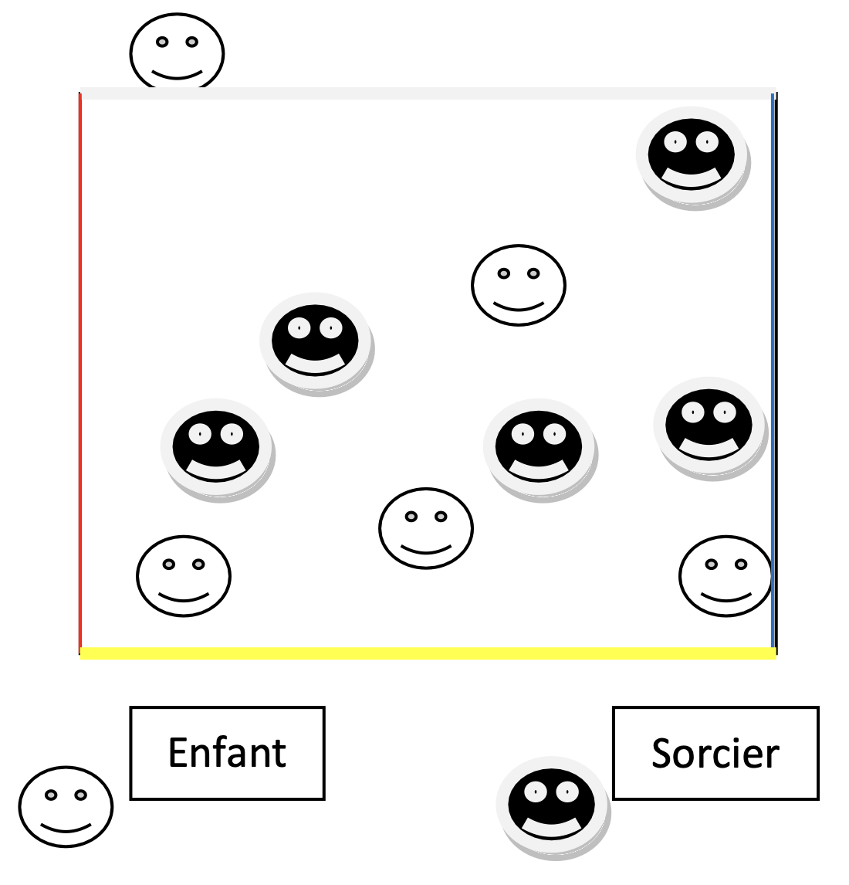

Objectif d'apprentissage
Accepter les premières règles communes. Construire la coopération avec les partenaires.
But
Pour les enfants : se mettre à l'abri en franchissant la ligne de couleur annoncée.
Pour les sorciers : attraper les enfants avant qu'ils ne s'abritent.
Critères de réussite
- Sorciers : avoir attrapé tous les enfants.
- Enfants : avoir réussi à se réfugier derrière la ligne de couleur.
Règles
- Au signal, les enfants doivent sortir du terrain par la ligne de couleur annoncée.
- Les enfants attrapés restent sur place, assis.
Organisation
Terrain de 15m x 15m avec lignes de couleurs différentes. Deux équipes égales. Le jeu commence à l'annonce d'une couleur par l'enseignant.
Modalités d'exécution
- Les enfants doivent repérer la sortie autorisée et courir vite.
- Les sorciers doivent s'organiser pour attraper les enfants.
Évolutions
- Annonce de plusieurs couleurs.
- Moins de sorciers que d'enfants.
- Possibilité de libérer les enfants attrapés en les touchant.